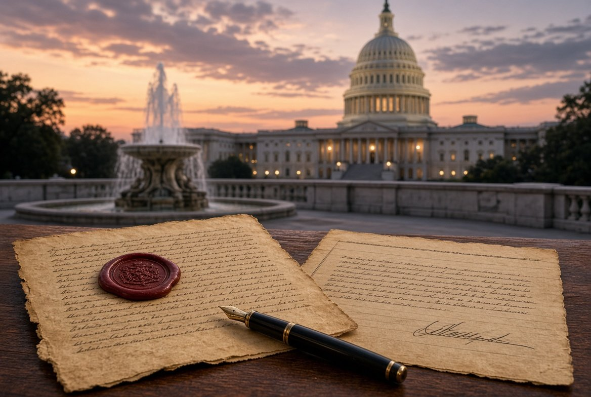

Artículo 6 · Anexión

Estados Unidos no tiene una sola manera de anexar. El Congreso es el que decide el estatuto final: estado o territorio. En la historia se repiten cuatro caminos.
Tratado
El presidente negocia y el Senado ratifica con dos tercios. Así se compró Luisiana a Francia en 1803, Florida a España en 1819 y Alaska a Rusia en 1867. Las Islas Vírgenes se compraron a Dinamarca en 1917 por tratado. Puerto Rico y Guam pasaron en el Tratado de París de 1898, después de la guerra con España.
Resolución conjunta
La aprueban la Cámara y el Senado por mayoría, y la firma el presidente. No exige los dos tercios del Senado. Así entró Texas en 1845, cuando todavía era república, y así se anexó Hawái en 1898. Hawái no fue estado ese año: fue territorio hasta 1959.
Cesión después de una guerra
El territorio cambia de soberano en el tratado de paz. Puerto Rico, Guam y Filipinas salieron de España por esa vía en 1898. Filipinas recuperó la independencia en 1946. La guerra sola no anexa: anexa el tratado o la ley que la sigue.
Admisión como estado
El artículo IV de la Constitución dice que el Congreso admite estados nuevos. Eso es un paso distinto de la anexión. Texas lo hizo casi a la vez. Hawái esperó sesenta y un años. Puerto Rico, Guam, Samoa Americana, las Islas Vírgenes y las Marianas del Norte fueron anexados y siguen siendo territorios.
Qué haría falta en el caso de Cuba
Una anexión de un país independiente no se hace por decreto ni por una base militar. Haría falta un acto de Estados Unidos, tratado o resolución del Congreso, y un acto del otro lado que ceda la soberanía. El Congreso decidiría después si es estado, como Texas, o territorio, como Puerto Rico. Sin esas dos leyes, no hay anexión.